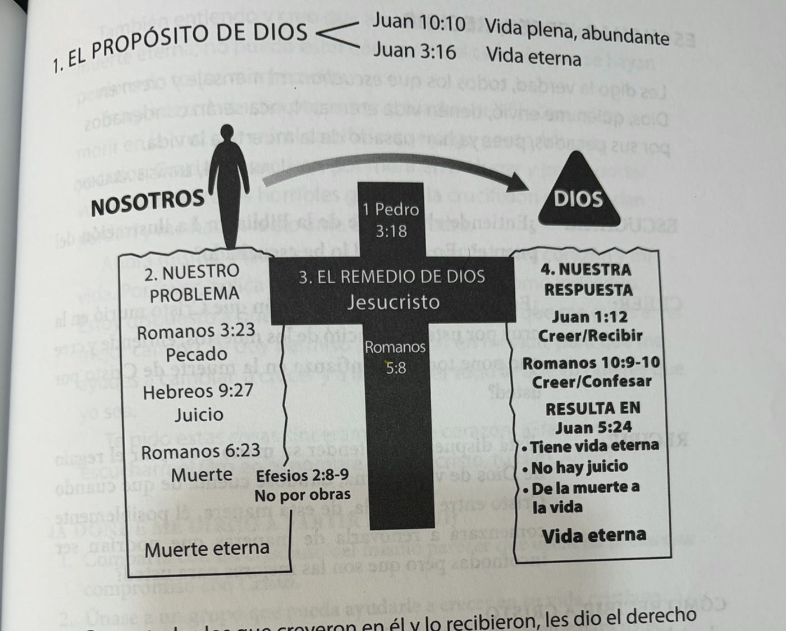

Antes de entrar en lo nuevo, conectemos como grupo y recordemos dónde quedamos.
Hoy vemos lo general de cada sección; el detalle lo trabajamos juntos con el estudio en mano.
«La gente no vive sólo de pan, sino de cada palabra que sale de la boca de Dios.»
Hay un hambre del corazón que solo la Palabra de Dios puede satisfacer. El estudio bíblico de esta serie te ayuda a:
Comienza orando: «Abre mis ojos, para que vea las maravillosas verdades que hay en tus enseñanzas.» (Salmo 119:18)
Para comentar, todo lo que necesitas es una Biblia: las preguntas te guían al pasaje.
Cinco versículos que te equipan para tus encuentros con el enemigo. Hoy los exploramos juntos.
No medimos la seguridad de la salvación por lo que sentimos, sino por lo que Dios prometió.
La Palabra fue el arma de Jesús ante la tentación (Efesios 6:17 · Mateo 4).
Estas cinco verdades te equipan para tus encuentros con el enemigo.

No basta conocer la ilustración: la respuesta involucra entendimiento, confianza y entrega.
«Abre mis ojos, para que vea las maravillosas verdades que hay en tus enseñanzas.»